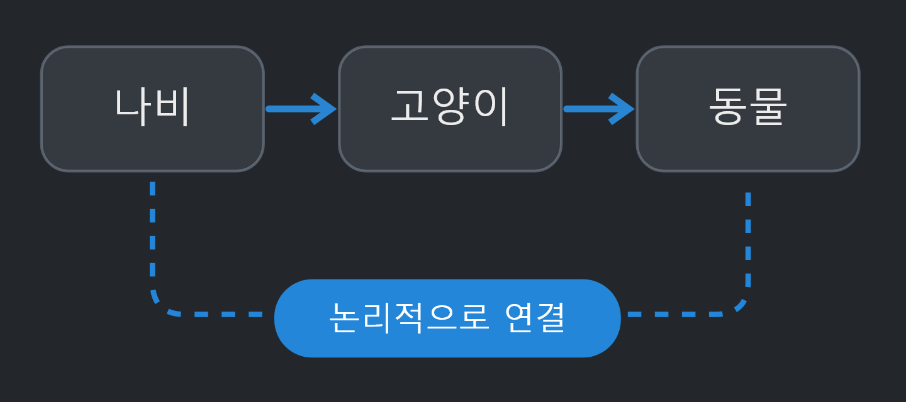
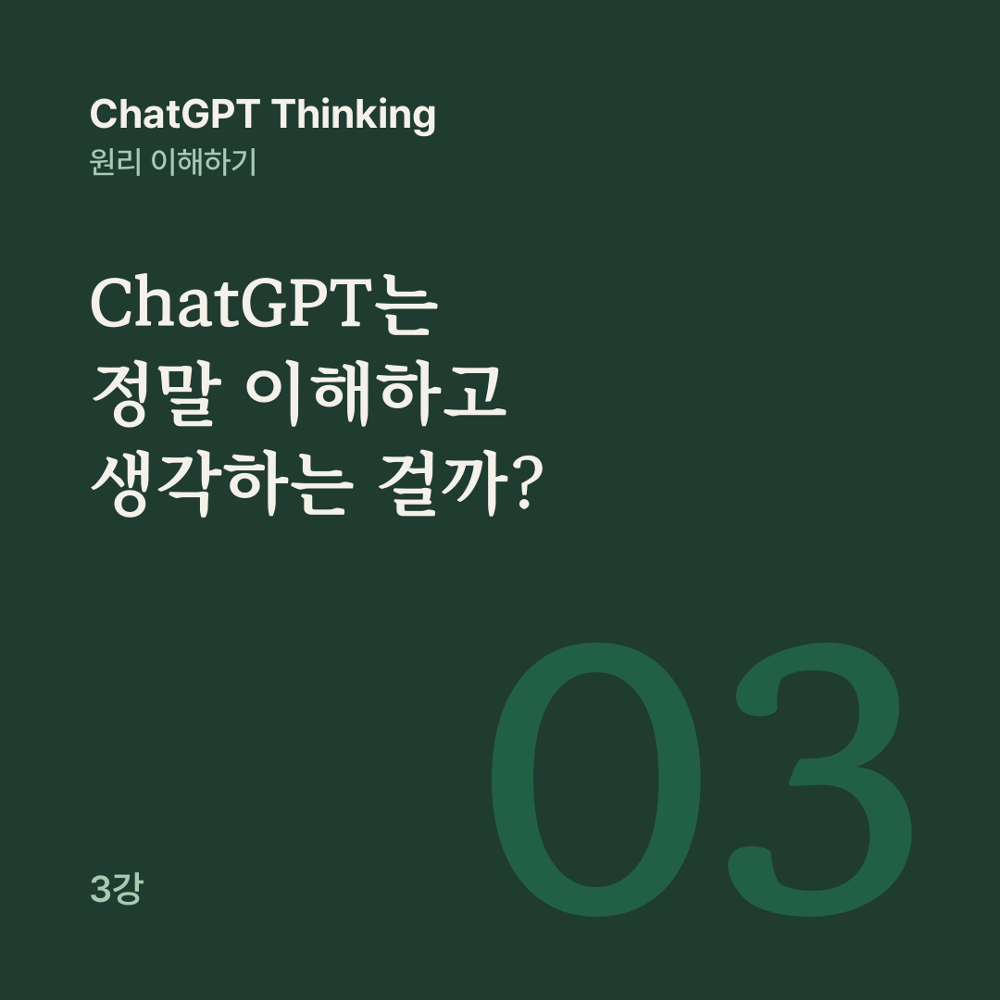

AI 원리 노트 · ChatGPT Thinking 3강
추론 능력은 새로운 문제에서 검증할 수 있지만, 그 결과만으로 의식이나 주관적 경험을 증명할 수는 없습니다.
1강에서는 다음 단어 예측, 2강에서는 파라미터·벡터·어텐션을 배웠습니다. 이제 가장 흥미로운 질문에 도착했습니다.
ChatGPT가 ‘사과는 과일이다’라는 사실을 정확하게 설명할 때, 정말 사과가 무엇인지 아는 걸까요? 아니면 정답처럼 보이는 문장을 만들어 내는 걸까요?
이 질문을 풀려면 우리가 평소 하나로 생각하던 세 가지를 나눠야 합니다.
자연스럽고 적절한 말을 만들어 내는 표현 능력, 정보와 규칙을 연결해 새로운 결론을 도출하는 추론 능력, 그리고 무언가를 느끼거나 경험하는 내면적 측면이 있는가 하는 문제, 곧 주관적인 이해와 경험입니다.
AI가 표현과 추론을 잘 해낸다는 사실만으로 주관적인 이해와 경험까지 갖고 있다고 결론 내릴 수는 없습니다. 그렇다고 그것이 없다고 단정할 충분한 과학적 기준도 아직 마련되지 않았습니다.
사람은 사과를 직접 보고, 만지고, 냄새 맡고, 먹었던 경험을 떠올릴 수 있습니다. 먹어 보며 ‘아삭하다’, ‘달다’, ‘시다’라는 감각을 경험하기도 합니다. ChatGPT는 감각이나 경험에 대한 서술을 학습하고, 다양한 문맥에서 사과가 어떤 개념들과 연결되는지 처리합니다.
이미지처럼 여러 종류의 데이터를 다루는 모델도 있지만, 그렇다고 사람과 같은 주관적 경험을 한다는 뜻은 아닙니다. 사람과 ChatGPT 모두 유용한 정보를 다룰 수 있습니다. 다만 정보를 배우고 활용하는 방식이 다릅니다.
모든 고양이는 동물이다. 나비는 고양이다. 따라서 나비는 동물인가?
답은 ‘그렇다’입니다. 중요한 것은 ‘나비는 동물이다’라는 문장을 미리 외웠는지 여부가 아닙니다. 문장 속 관계를 연결할 수 있느냐가 중요합니다.

3강 공개 대화에 실린 원본 도식입니다. A는 B이고 B는 C라면, A는 C라는 관계를 도출할 수 있습니다.
AI는 학습 과정에서 이런 관계 패턴을 익힐 수 있습니다. 새로운 문제에서도 관련 정보를 처리해 올바른 결론을 생성하는 능력이 발전할 수 있습니다. 다음 단어를 예측하는 과정에서도 정답에 필요한 논리적 관계를 계산하는 것이 유리할 수 있습니다.
모든 고양이는 동물이다. 나비는 동물이다. 결론: 나비는 고양이다.
앞의 문제와 비슷한 단어를 쓰지만 논리 구조는 다릅니다. 이 문제는 나비가 동물이라는 사실만 알려 줍니다. 동물이라고 해서 반드시 고양이는 아니므로 결론을 보장할 수 없습니다.
AI가 이런 차이를 새로운 문제에서도 일관되게 구별한다면, ‘고양이’와 ‘동물’이라는 단어를 연상하는 것 이상의 추론 능력을 보여 주는 증거가 됩니다.
물론 한두 문제를 맞힌 것만으로 내부에서 정확히 어떤 계산을 했는지 알 수는 없습니다. 그래서 연구자들은 표현만 바꾼 문제, 반례, 새로운 상황 등을 함께 테스트합니다.
쉬운 문제라면 곧바로 답을 만들 수 있습니다. 하지만 조건이 많은 문제는 어떨까요? 세 사람이 서로 다른 요일에 회의한다고 해 봅시다.
A는 B보다 먼저 참석해야 하며, C는 월요일에 참석할 수 없다. 가능한 일정은?
이런 문제는 한 번에 답을 만드는 것보다 조건을 나누어 검토하는 편이 유리할 수 있습니다.
이를테면 누가 언제 참석할 수 있는지 정리하고, A가 B보다 먼저 참석해야 한다는 조건을 반영합니다. C를 월요일에 놓은 후보는 조건과 충돌하므로 고치거나 새 일정을 시도하고, 끝으로 검토한 결과를 사용자가 이해할 수 있게 설명합니다.
이 흐름은 단계적 추론이 왜 유용한지 보여 주는 예시이고, 특정 모델의 숨겨진 사고 기록은 아닙니다.
추론 모델은 이런 단계적 문제 해결을 더 잘하도록 학습됩니다. OpenAI는 2024년 o1 연구에서 강화학습으로 모델이 문제를 나누고, 실수를 수정하고, 다른 접근을 시도하도록 학습시켰다고 밝혔습니다.
추론 모델도 기본적으로는 다음 토큰을 생성하는 방식을 씁니다. 다만 최종 답변에 앞서 중간 추론을 하도록 학습되고, 그 과정에 추가 계산을 쓸 수 있다는 점이 다릅니다.
먼저 A를 확인하고 다음에 B를 계산했습니다.
AI는 풀이를 이렇게 설명할 수 있습니다. 하지만 이 문장이 내부에서 일어난 계산을 완벽하게 기록한 것은 아닙니다. 실제 내부에서는 엄청난 수의 수치 계산과 정보 변환이 일어납니다.
2025년 Anthropic 연구진은 Claude 모델의 내부 계산에서 일부 개념과 정보의 흐름을 추적한 연구를 발표했습니다. 이 결과는 내부 계산이 출력 문장만으로는 충분히 설명되지 않을 수 있음을 보여 줍니다.
그래서 설명된 풀이와 내부 계산은 나눠서 봐야 합니다. 설명된 풀이는 사용자가 볼 수 있도록 생성된 단계별 설명이고, 내부 계산은 추론하는 동안 신경망이 실제로 수행한 수치 처리입니다. 둘은 서로 관련이 있지만 완전히 같다고 가정할 수는 없습니다.
AI에게 ‘진짜 이해’가 있느냐는 질문은 과학과 철학이 만나는 지점입니다. 여기서 널리 알려진 사고실험이 중국어 방(Chinese Room)입니다.
방 안에는 중국어를 전혀 모르는 사람 한 명, 중국어 기호가 적힌 종이, 그 기호에 어떻게 대응할지 알려 주는 아주 복잡한 규칙책이 있습니다.
밖에서 누군가 중국어 질문을 넣으면, 방 안의 사람은 규칙책만 보고 적절한 중국어 답을 내보냅니다. 밖에서 보면 이 사람은 중국어를 유창하게 이해하는 것처럼 보입니다.
철학자 존 설(John Searle)은 1980년 이 사고실험으로, 기호를 규칙에 따라 조작하는 능력만으로 실제 의미 이해를 증명할 수는 없다고 주장했습니다.
하지만 반론도 있습니다. 방 안의 사람 혼자는 이해하지 못하더라도, 규칙책과 사람을 포함한 전체 시스템이 이해한다고 볼 수 있지 않느냐는 것입니다.
AI 연구에서 ‘이해’라는 말은 종종 문제를 풀고 개념을 올바르게 사용하는 능력을 뜻합니다. 반면 철학에서 말하는 ‘진정한 이해’에는 주관적인 경험이나 의미를 실제로 느끼는 문제까지 포함될 수 있습니다.
따라서 AI가 어떤 문제를 이해하고 해결할 수 있다고 말하는 것과, 사람과 같은 의식적 경험을 갖는다고 말하는 것은 다른 주장입니다.
ChatGPT는 단순히 문장을 통째로 암기해서 답하는 시스템이 아닙니다.
수치로 표현된 정보와 학습된 관계를 이용해 새로운 문제에 대응할 수 있는 모델입니다. 동시에 이것만으로 인간과 똑같은 방식으로 생각하고 이해한다고 증명된 것은 아닙니다.
그런데 AI가 문맥을 이해하고 논리적 추론도 할 수 있다면, 왜 때때로 존재하지 않는 정보를 진짜처럼 말할까요? 4강에서는 환각(Hallucination), 확신과 정확성의 차이, Thinking으로도 막을 수 없는 오류를 살펴볼 수 있습니다.
공개 대화의 3강을 블로그용으로 다시 편집했습니다. 원문 강의가 참고한 글은 아래 세 편입니다.
